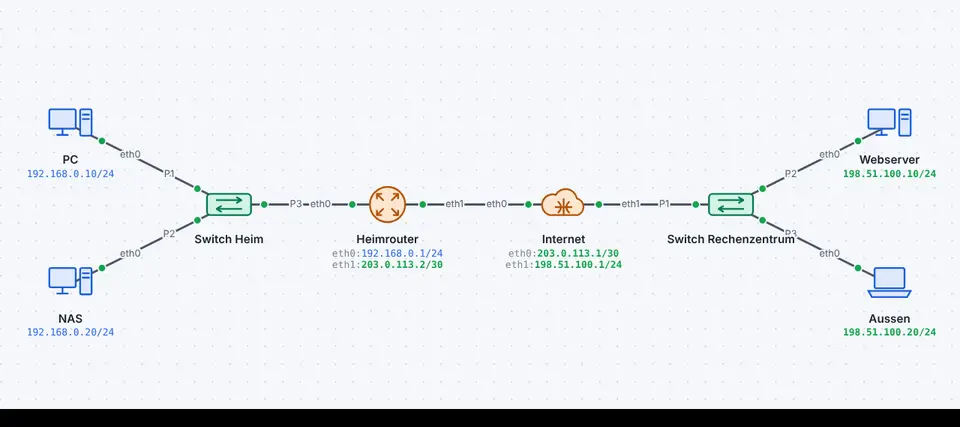
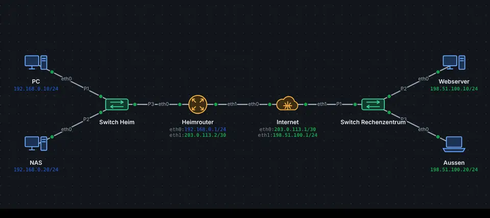

Private addresses (RFC 1918) may not go onto the internet; the provider drops them. And public IPv4 addresses are scarce: a household or a school often gets only one. NAT (network address translation) at the router replaces the private source address with the public one on the way out and remembers the mapping so the reply finds its way back.
PAT: many devices, one address
With PAT (port address translation, also NAT overload) all devices share the public address; they are told apart by the port:
inside
outside
192.168.1.10:49152
203.0.113.2:1024
192.168.1.11:49152
203.0.113.2:1025
The NAT table (show ip nat translations or at the router in the simulation) shows these entries.


Slow motion NAT in the simulation: the router replaces the private source address
From outside in
Nobody outside can start a connection to a private device; the table does not know the way. For this there are:
Type
Effect
Example
Port forwarding (DNAT)
port of the public address → internal device
TCP 443 → NAS 192.168.1.20
Static DNAT
own public address → internal device, incoming
web server under 203.0.113.80
Static SNAT
internal device always goes out with a fixed address
mail server with a fixed source address
1:1 NAT
both together
server in the DMZ
CGNAT
Many providers themselves have too few public addresses. They give their customers addresses from 100.64.0.0/10 (RFC 6598) and translate a second time in their own network. For port forwarding from outside this is a problem: the customer no longer owns a public address. One solution is IPv6 or DS-Lite.
How to do it in leyoNET
The same text as in the app’s help (F1 key).
NAT/PAT
Private addresses are not reachable on the internet. NAT therefore replaces addresses between inside and outside. There are two directions:
SNAT (source NAT) replaces the source address of outgoing packets. The most common form is PAT (masquerading): everyone shares the router address and is told apart by port. With static SNAT a device always goes out with a fixed public address. Replies come back through the remembered connection, new connections from outside do not.
DNAT (destination NAT) replaces the destination address of incoming packets: as a Port forwarding (one port) or as static DNAT (a whole public address). The replies leave the router with the public address again.
1:1 NAT combines both (1:1 NAT (static NAT)). Everything is set in the NAT tab of the advanced settings; in the simulation the NAT table shows the type of each entry. See also Carrier-grade NAT.
1:1 NAT (static NAT)
Maps an inside address to a fixed outside address, in both directions: outgoing, the router replaces the source address (SNAT), incoming the destination address (DNAT). That way a server is reachable under its own public address and also goes out with it. The router answers ARP requests for the outside address (proxy ARP).
If only one direction should apply, the NAT tab offers static SNAT or static DNAT (NAT/PAT).
CLI: ip nat inside source static 192.168.1.10 203.0.113.10 (1:1 only).
Port forwarding
Forwards requests to a port on the public address (e.g. TCP 80) to a device in the private network, making a web server behind NAT reachable from outside. It doesn't work behind Carrier-grade NAT because the public address belongs to the provider.
Carrier-grade NAT
Because IPv4 addresses are scarce, many providers give customers only an address from 100.64.0.0/10 and translate to public addresses themselves. The customer then has double NAT and cannot forward ports. Enable it on the Internet device per customer port.
See an example
NAT and port forwarding
Home network with private addresses behind a NAT router.
The PC opens a public web page; the router's NAT table shows the translation to the public address.
Company network with PAT for everyone and static SNAT for the mail server.
PC 1 appears outside as 203.0.113.2 with a different port (PAT), the mail server always as 203.0.113.5 (static SNAT). The router's NAT table shows both types.
Internal web server under its own public address, plus a port forward to the NAS.
«Outside» opens 203.0.113.5; the router replaces the destination with 192.168.0.80 and the reply leaves with 203.0.113.5 again. Then try http://203.0.113.2:8080/ (port forward).